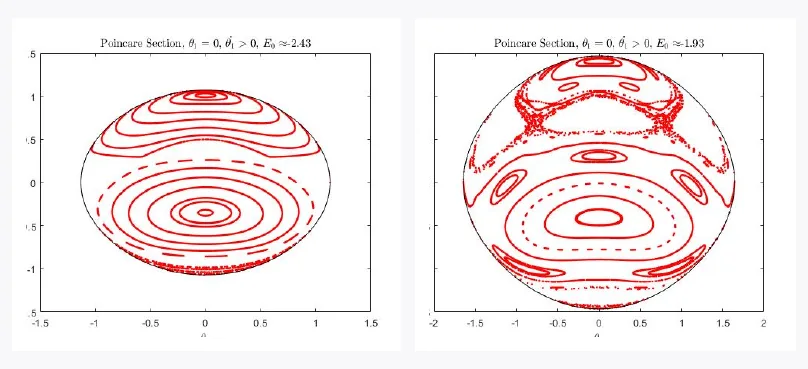

The double pendulum offers an unusually rich laboratory for studying the boundary between regular and chaotic motion.
From mechanics to equations
I derived the system's equations using Lagrangian and Hamiltonian mechanics, nondimensionalized the dynamics, and studied normal modes in the small-angle regime. Analytical approximations were checked against numerical solutions of the full nonlinear equations in MATLAB.
Visualizing invisible phase space
Because the phase space is four-dimensional, Poincaré sections provide a more accessible picture of motion. By recording intersections with a lower-dimensional section, one can investigate regular orbits, resonances, and regions showing chaotic behavior.

Measuring sensitivity
I investigated Lyapunov spectra by integrating variational equations and repeatedly orthonormalizing tangent vectors. I also explored Poincaré–Lindstedt perturbation analysis and numerical methods for periodic orbits.
This was an early project that helped connect my physics training to applied mathematics and scientific computing.